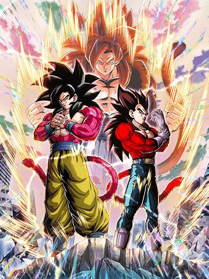
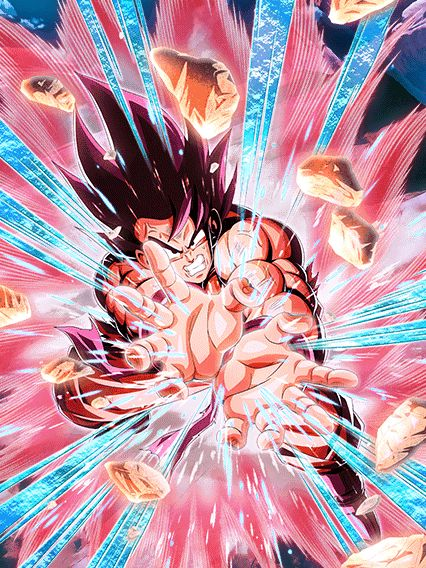
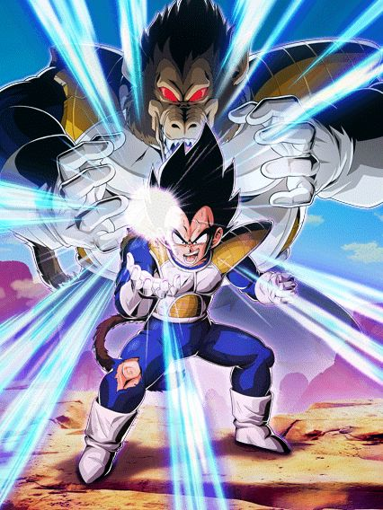
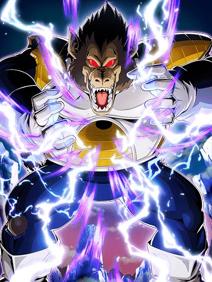
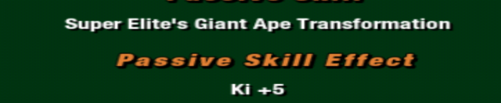
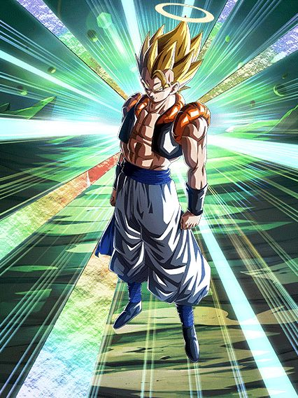
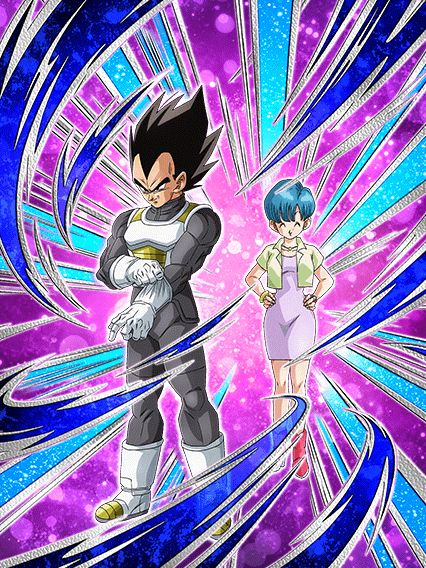

O melhor aniversário.
O sétimo aniversário foi praticamente um reboot em tudo q considerávamos normal no dokkan, introduzindo as red zones como novo conteúdo difícil, as leader skills de 200%, intros nos cards, múltiplas actives, as novas osts de menu feitas só pro aniversário...
Foi facilmente a celebracão mais especial na história do jogo e não tem nem oq dizer, vai ficar marcada pra história.
^ Sumário (clique para ir a qualquer um dos tópicos)
Por que os gods são tão bons? Acho que isso é óbvio.
Além deles terem uma incrível leader skill que engloba os personagens mais fortes do jogo, eles tem ótimas
categorias fazendo com que eles fiquem em times muito bons, mas ai vc me diz: “Ah mas nem só de categoria vive um
personagem.”, beleza, então vamos falar sobre seu kit:
Antes de transformar, os gods tem um stack de ATK e DEF de 20% em seus supers, sendo assim, quanto mais supers vc
der antes de transformar, mais forte eles vão estar quanto transformarem, mas claro se você tiver 5 neurônios vc já
deve saber disso.
Então vamos falar sobre sua passiva: Assim que eles entrarem no turno, vai começar a animação de entrada que é uma
cereja no bolo, então no primeiro turno eles vão ter guarda ativa por 1 turno que é algo muito bom porque como eles
precisam stackar para ficar mais forte, no primeiro turno eles estariam muito frágeis mas com essa guarda ativa eles
se mantêm no primeiro turno.
Eles começam com 120% de ATK e DEF, e ganham 7% de chance de critico por rainbow orb obtida, e o mais incrível é q
eles dão um super ataque adicional garantido quando estão com 20 ou mais de ki, isso é algo muito bom já que eles
stackam, então eles podem acabar dando ate 3 supers no turno fazendo com que eles ganhem 60% de ATK e DEF.
E eles vão ganhar ki +1 por ki sphere obtida e vão ganhar um aumento de ATK e DEF de 77% por 7 turnos desde o
início, então é mais um buff que eles ganham no começo da batalha que é algo muito bom.
E eles ainda ganham ataques efetivos quando estão com 24 de ki e fica muito fácil para eles darem o super adicional
ou pegar o dano efetivo porque eles vão ganhar ki +2 por ki sphere obtida por 7 turnos e depois desses turnos eles
ainda vão ganhar ki +1 por ki sphere.
Eles podem usar a ativa apartir do 4º turno.
Quando você transformar os gods você vai ouvir uma das melhores OST do jogo
Mas deixando o "TRUTRUT PAPAPAPANNNNNPAPAAPNNNNNNNNN" (esse é meu despertador por sinal) de lado vamos falar do seu
novo kit, quando transformados, o ultra super attack vai desabilitar uma ação do inimigo.
Eles ganham 177% de ataque e defesa e vão ganhar ki +2 por ki sphere obtida, chance de critico e chance de desviar
+7% por rainbow orb obtida, ataques efetivos quando estão com 16 ou mais de ki, lança um super adicional quando
estão com 20 ou mais de ki e quanto mais supers, mais dano, então se você stackou bem antes de transformar, esse
card vai dar muito dano.
A active.
Pode ser ativada quando o seu HP ou do inimigo estiver em 50% ou menos, causa ultimate damage ao inimigo e todos os
ataques se tornam críticos.
Então, essa ativa é muito boa para dar muito dano cara, se vc tiver com 1 milhão de ataque que não é algo difícil
(eu to escolhendo um número baixo e se usar a ativa), você vai ganhar um aumento de 550% que vai ser 5.500.000 mais
os 1.000.000 então vc vai dar aí uns 6.500.000 de dano mais todos os seus ataques no turno que vão ser crítico
fazendo com que todos os ataques ganhem um multiplicador de 1,9 então vc vai dar quase o dobro do dano nos seus
ataques, então você vai destruir qualquer boss no turno da sua ativa. - By Dollyinho
Broly STR
Bom, ele não faz nada.
Esse cara é realmente um completo inútil
Literalmente metade do kit dele quer q ele pegue 6 orbs mas ele não é orb changer de NADA, não dá suporte, não tanka, não dá dano, qual era o objetivo desse cara? Pq ajudar os gods que não era.
Tudo bem guys, ele tem uma incrível mecânica de final blow onde ele cura 26% de HP, muito fácil fazer isso com um card q não dá dano, boa sorte :)
OS MAMACOS

Os macacos, vulgo os melhores personagens da categoria gt heroes.
A leader skill deles é a melhor para a categoria de gt heroes e com ela dá pra fazer uns times bem quebrados, são
ótimos parceiros de link skills. O super e ultra deles é bem roubado, deixando eles stackarem um pouco de def e
stackam atk pra caramba.
Na sua passiva temos 77% de atk e def por 7 turnos, 120% de atk e def, chance de crítico aumentada por cada rainbow
orb pega, adicional garantido com mais de 20 de ki, dá dano efetivo em qualquer inimigo se tiver pego mais de 24 de
ki e ganham o dobro de ki por cada orb que você pega.
A partir do 4º turno você pode ativar a fusão, onde tem uma animação incrível e uma linda ost.
A passiva do gogeta é bem quebrada, contando com +177% de ATK e DEF, +2 de ki por orb pega, +7% de chance de reduzir
o dano por cada rainbow orb pega, ataque efetivo em qualquer inimigo, 30% de chance de dar um critico, 50% de dar um
adicional e 50% de chance de counterar um super de inimigo.
Seu super e ultra são as melhores animações do jogo e também aumentam o ATK e DEF por turno.
Por fim temos a sua active skill, que é L I T E R A L M E N T E a melhor animação do jogo inteiro e
a melhor ost, pra ativar ela ou você ou o inimigo tem que estar com menos da metade da vida e quando ativada causa
um dano critico imenso e se o inimigo não morrer ele ainda dá critico garantido pra todos os outro golpes no turno. - By Auã
Syn Shenron TEQ
Gt bosses..?
Não ironicamente esse cara seria bom se o time dele não fosse morto, já q ele tem coisas boas no kit mas ele tá meio q sozinho 💀
Ele se resume a pegar 7 orbs, já que ele só tem 100% de ATK e DEF e vai pegando buffs a cada orb
Resumindo, quando vc pega 7 vc tem 220% de ATK e DEF a mais, 50% de chance de dar um super adicional e 50% de chance de crítico, oq é bem decente e ele tem big bad bosses, uma pena q de novo, gt bosses não tem nem um líder 150% em anos de jogo..
EZA do Gogeta SSJ4 TEQ
No dia q fizerem alguém parecido com esse cara, o dokkan treme.
Um eza simples mas eficaz, o gogeta tem uns números legais ali e tem 50% de ser efetivo contra tudo oq é estranho mas nada de horrível
Ele tem uma mecânica q infelizmente é uma falha q é "buildar" entre bastante aspas 25% de ATK e DEF por super feito até 50%, mas isso dura só 5 turnos oq significa q se vc não pegar um super adicional vc vai basicamente nunca ver a passiva completa do gogeta
Mas tudo se compensa com a simples mecânica mais absurda de todas: 70% DE CHANCE DE COUNTERAR TUDO
Esse cara simplesmente tem 70% de chance de ignorar todos os bosses do jogo, isso é completamente desbalanceado, 70%, mesmo que com suas falhas, é bem alto, esse gogeta praticamente não consegue ser acertado por supers
Uma pena q eles olharam demais o counter e esqueceram do resto do kit..
EZA do Omega Shenron PHY
Ele demora pra buildar.
Esse cara builda 70% de ATK e DEF atacando 7 vezes enquanto tem apenas 1 adicional de 30% de chance de ser um Super
Ele até chega em uma defesa interessante e tem Big Bad Bosses, mas slk, o EZA poderia ter sido melhor, pq o Gogeta ajuda muito mais doq esse cara
EZA DO GOKU GOD TEQ
QUE LENDA MEUS AMIGOS, QUE LENDA.
Esse eza carregou o aniversário inteiro, sejamos honestos, a red zone de filmes foi possivel ser feita por causa dele
O kit dele é fácil de explicar: pegue 2 rainbow orb e largue esse cara no slot 1, talvez nem precise dos orb.
Esse cara é orb changer, linka super bem com os gods (sendo o perfeito slot 1 pra eles) e pegando 2 rainbow orb vc ganha 77% de ATK e DEF, mas oq só importa realmente são os 77% DE REDUÇÃO DE DANO contra movie bosses or pure saiyans, que adivinha só, era a red zone movies inteira
Ele eventualmente ainda ajudaria na red zone wicked bloodline, na red zone da red ribbon e até no evento do Cell Max, mas lá ele já tava mostrando alguns sinais de falha pq a redução de dano ajuda mas não em cima de uma defesa relativamente baixa
EZA do Vegeta SSJG STR
Comparar esse cara com o Goku god TEQ é ridículo.
Esse cara tem incríveis 50% de chance de defesa ativa, e se não ativar... F
Ele ganha 77% de ATK e DEF por 3 turnos depois de levar um golpe, o que ajuda ele a tankar um pouquinho melhor
E o Super Attack dele stacka 50% de ATK.. apesar de o dano continuar sendo bem "ok"
Em geral, o Goku god TEQ ganhou na vida e esse cara é apenas mais um EZA.
Goku Kaioken LR

Canhão de vidro muito lindo.
Esse cara foi abençoado com animações e OSTs incríveis, mas ele é um personagem de dano que é bem arriscado de usar
Ele tem uma animação de intro caso tenha um inimigo Vegeta, que dá Ki e 70% de ATK pra ele pro resto da luta
Ele muda orbs aleatoriamente pra STR, e tem 50% de chance de crítico pra sempre
O Ultra Super Attack dele é super devastador se critar, e apesar de sempre sacrificar 4% de HP, não é nada significativo
A Active Skill dele pode ser usada se estiver abaixo de 59% de HP e dá um dano bom também
Em geral, o dano desse cara é ótimo, mas ele pode estar em sérios problemas contra os bosses mais fortes
Vegeta Mamaco LR

Bro acha que é um tank 💀
Esse cara tem defesa ativa permanente e ganha mais Ki e 30% de ATK se ele levar um golpe antes de atacar
SENDO Q ELE GANHA METADE DA DEFESA NO SUPER ATTACK
É intankavel, ele simplesmente não consegue ser competente em nem ataque e nem defesa
Ele pelo menos tem uma animação de intro maneira contra qualquer Goku, tem OSTs boas e uma arte bem bonita
Se teu HP cair abaixo de 40% ele pode se transformar em Oozaru.. mas uhh..

Ki +5.
Essa é a passiva dele, é só isso.
Eu não vou elaborar nada, acabou a review.

EZA do Vegetto INT LR
Bem perigoso no começo da luta.
Esses caras ganharam no EZA apenas míseros 30% de chance de crítico e 30% de chance de desvio, além de um leve aumento no ATK e DEF básico deles
O desvio não é muito confiável, o que é um problema.. mas pelo menos deixa eles próximos da condição de fusão né?
Se você estiver abaixo de 50% de HP a partir do turno 6.. (o que é bem complicado eu diria) eles podem fazer a fusão potara
Counters.
Esse cara tem 30% de redução de dano por 3 turnos, o que faz ele imune a quase todo dano de ataques básicos
Ataques básicos que ele countera garantido pra sempre, se tornando uma máquina de dano fácil se ele tiver crítico no Hidden Potential
Infelizmente a redução cai pra 15% depois desses 3 turnos, mas ainda assim, se a luta não tiver acabado no turno 9 ou 10, a situação vai tar difícil mesmo né
EZA do Gogeta PHY LR
Esses caras tem a exata mesma passiva que a forma base do Vegetto INT LR acima
30% de chance de desvio e crítico não é muito bom, mas é alguma coisa
Mesma condição de fusão e tudo, é isso

Dano mais confiável que o Vegetto?
Esse cara é super efetivo pra sempre, e nos primeiros 3 turnos tem crítico garantido e 50% de chance de desvio
Defensivamente ele pode ser um pouquinho mais confiável que o Vegetto, já que desviar de algo sempre e melhor que tankar
Depois desses 3 turnos, o Gogeta ainda fica com 50% de chance de crítico e 30% de chance de desvio
Em geral, esse cara pode acabar sendo um pouco melhor que o Vegetto dependendo da situação, mas a luta mais difícil da época cancelava desvio, tornando ele inútil.
Gohan, Goten e Trunks F2P LR
Fizeram..
Fizeram um card da abertura do Z.
Sinceramente eu nem me importo se esse card fosse bom ou ruim, eu só amo demais a homenagem a abertura incrível que é We Gotta Power
Pra começar, eles tem 70% de ATK e DEF por 7 turnos com uma animação de intro linda
Eles ganham +70% de ATK se tiver um Goku no time, e +70% de DEF se ele estiver no turno com eles
Eles ganham o mesmo buff com um Vegeta, ganhando 70% de DEF se ele estiver no time e +70% de ATK se ele estiver no turno
Em resumo, use eles com vários Gokus e Vegetas e eles tem uma passiva.
Goku e Chi-Chi F2P
Card fofo.
Eles buildam 88% de ATK e DEF a mais atacando 4 vezes e dão 22% de ATK e DEF pra Goku Family e Joined Forces
E até lançam um adicional com 50% de chance de ser um Super, o que é bem útil pra buildar mais rápido
Depois de mandar pelo menos 4 Super Attacks, eles podem usar a Active Skill bem desbalanceada deles, que dá um pouquinho de dano e impede o inimigo de atacar no turno inteiro
Esse tipo de habilidade não se vê num card F2P, então é uma verdadeira raridade.
Vegeta e Bulma F2P
Suportezinho que tenta tankar.
Esse cara dá 20% de ATK e DEF pra Vegeta Family e Joined Forces
Ele também tem 20% de redução de dano.. que é meio meeehhhh mas é alguma coisa
A partir do turno 4 a Bulma faz o Vegeta trocar de roupa e usar o drip

Ele tem 30% de chance de ajudar na luta
O suporte do Vegeta vai de 20% pra 22%, o que não é muito, mas é algo
E agora ele tem 22% de redução de dano com 30% de chance de ganhar outros 22%
Em resumo, ele pode tankar de forma "decente", mas não tem como você saber se a redução tá ativada ou não, então é.. complicado
O EZA Global-First do Goku SSJ4 Full Power TEQ
Uma pequena surpresinha do Global pro aniversário.
Além dos buffs nos stats dele, esse cara agora ganha +59% de ATK e DEF se todos aliados no turno forem Super Class
Infelizmente a chance de counter dele continua sendo 30%, o que é triste, já que é bem difícil ver a animação desse jeito né 💀
Caso tenha um aliado Full Power no turno e ele estiver abaixo de 59% de HP, o Goku ganha Scouter, o que pode ou não ser útil né
Em geral, até que foi um EZA bem generoso
O EZA DO GOKU SSJ4 LR AGL
Ainda não tem defesa o bastante.
Uma das melhores mudanças que fizeram nesse EZA foi tirarem a buildagem de DEF que o Goku tinha, trocarem ela por uma buildagem de ATK e só colocarem toda a DEF no começo do turno
A chance de counter dele contínua sendo 30% infelizmente, mas ele tem pelo menos alguma defesa agora
Se ele der 2 Supers, ele consegue tankar bem, caso contrário.. tome cuidado
Apesar disso, o dano dele é MUITO bom e ele ainda quebra 1 ação do inimigo se tiverem 2 ou mais.
O EZA DO VEGETA SSJ4 LR STR
O mesmo que o Goku, mas defensivo.
Esse cara tem bem mais defesa que o Goku, tendo o mesmo buff no início de turno que ele tem, mas buildando +20% a cada turno até chegar em 60%
Tirando isso, ele tem tudo igualzinho ao Goku
Counter, quebra de ação.. você entendeu
Ambos EZAs são úteis pra ajudar os Mamacos LR.
Você chegou ao fim dessa página!
Obrigado por ler tudo, e fica a vontade pra ver outras